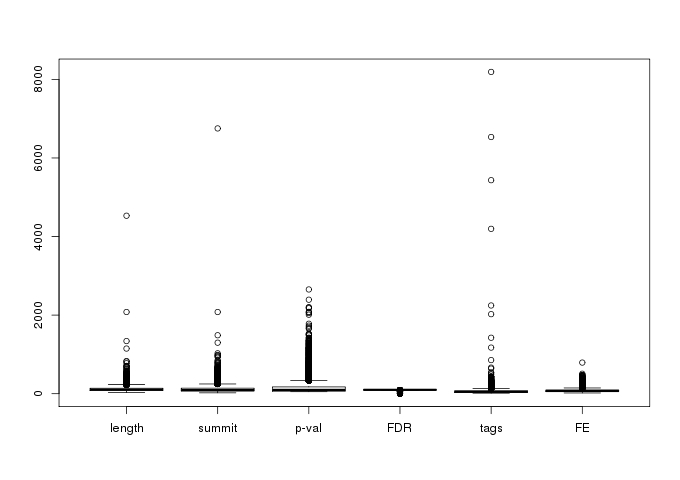

| MACS PARAMETERS | ||
| Radar Chart of adjusted MACS Output Parameters (Median & 1./3.Qu.) | ||
| pdf: Radar Chart of adjusted MACS Output Parameters (Median & 1./3.Qu.) | ||
| Boxplot of original MACS Output Parameters | ||
| pdf: Boxplots of original MACS Output Parameters | ||
| Boxplot of adjusted MACS Output Parameters | ||
|  | ||
| pdf: Boxplots of adjusted MACS Output Parameters | ||